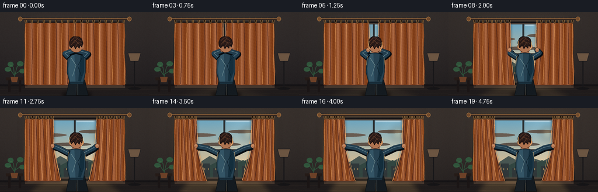
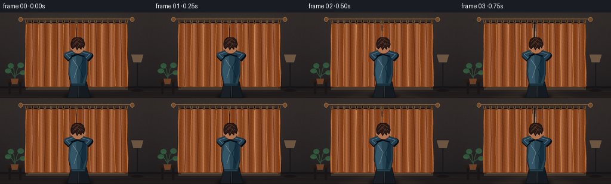

CODING AGENTS AS PIXEL WORLD MODELS
traex/GPT-5.6-Sol · motion_rationality_0053
点击播放 · 原生 RGB 像素
逐轮保存的候选
回放视频、检查图与代码变化。
每份候选均可单独播放。实际图片检查记录在下方工具轨迹中。
候选 01播放与检查图
点击播放 · 原生 RGB 像素

展开代码变化
--- 上一保存版本
+++ 本次保存版本
@@ -0,0 +1,377 @@
+from pathlib import Path
+import math
+import numpy as np
+from PIL import Image, ImageDraw, ImageFilter
+import artifact_io
+
+# Text-to-video procedural illustration: "A person is opening the curtains."
+# Render large, then downsample for clean antialiased edges.
+W, H, N = 256, 144, 20
+S = 4
+RW, RH = W * S, H * S
+ROOT = Path(__file__).resolve().parent
+rng = np.random.default_rng(5301)
+
+
+def sc(v):
+ if isinstance(v, (tuple, list)):
+ return tuple(int(round(x * S)) for x in v)
+ return int(round(v * S))
+
+
+def ease01(x):
+ x = min(1.0, max(0.0, x))
+ return x * x * (3.0 - 2.0 * x)
+
+
+def polygon(draw, pts, fill, outline=None, width=1):
+ draw.polygon([sc(p) for p in pts], fill=fill)
+ if outline:
+ draw.line([sc(p) for p in pts + [pts[0]]], fill=outline, width=sc(width), joint="curve")
+
+
+def line(draw, pts, fill, width=1, joint="curve"):
+ draw.line([sc(p) for p in pts], fill=fill, width=max(1, sc(width)), joint=joint)
+
+
+def ellipse(draw, box, fill, outline=None, width=1):
+ draw.ellipse(sc(box), fill=fill, outline=outline, width=max(1, sc(width)))
+
+
+def rounded(draw, box, radius, fill, outline=None, width=1):
+ draw.rounded_rectangle(sc(box), radius=sc(radius), fill=fill, outline=outline, width=max(1, sc(width)))
+
+
+def make_room(opening):
+ # Dim warm room; the ambient light rises subtly as the curtains open.
+ yy, xx = np.mgrid[0:RH, 0:RW]
+ y = yy / max(1, RH - 1)
+ x = xx / max(1, RW - 1)
+ warm = 7.0 * opening
+ vignette = 1.0 - 0.25 * ((x - 0.5) ** 2 + (y - 0.46) ** 2)
+ top = np.array([58, 52, 50], dtype=float)
+ bot = np.array([38, 35, 37], dtype=float)
+ base = top[None, None, :] * (1 - y[:, :, None]) + bot[None, None, :] * y[:, :, None]
+ base += np.array([warm, warm * .74, warm * .35])[None, None, :]
+ base *= vignette[:, :, None]
+ # Fine plaster texture, fixed across frames (no video shimmer).
+ noise_small = np.random.default_rng(191).normal(0, 1, (H, W)).astype(np.float32)
+ texture = np.asarray(Image.fromarray(((noise_small-noise_small.min())/(np.ptp(noise_small)+1e-6)*255).astype(np.uint8)).resize((RW,RH), Image.Resampling.BILINEAR), dtype=float)
+ texture = (texture - 127.5) * 0.018
+ base += texture[:, :, None]
+ im = Image.fromarray(np.uint8(np.clip(base, 0, 255)), "RGB").convert("RGBA")
+ d = ImageDraw.Draw(im)
+
+ # Floor and baseboard.
+ d.rectangle(sc((0, 126, 256, 144)), fill=(35, 31, 31, 255))
+ d.rectangle(sc((0, 124, 256, 127)), fill=(25, 23, 25, 255))
+ for yline in (133, 141):
+ line(d, [(0, yline), (256, yline-1)], (58, 48, 43, 120), .55)
+
+ # Soft halo on the wall around the window.
+ halo = Image.new("RGBA", (RW, RH), (0,0,0,0))
+ hd = ImageDraw.Draw(halo)
+ hd.rectangle(sc((44, 10, 212, 129)), fill=(255, 198, 112, int(28 + 32*opening)))
+ halo = halo.filter(ImageFilter.GaussianBlur(sc(10)))
+ im = Image.alpha_composite(im, halo)
+ d = ImageDraw.Draw(im)
+
+ # Window casing.
+ d.rectangle(sc((48, 16, 208, 126)), fill=(23, 23, 26, 255))
+ d.rectangle(sc((52, 19, 204, 122)), fill=(83, 72, 64, 255))
+
+ # Outside view inside the glazing.
+ gy0, gy1 = sc(21), sc(119)
+ gx0, gx1 = sc(55), sc(201)
+ sh, sw = gy1-gy0, gx1-gx0
+ sy = np.linspace(0,1,sh)[:,None,None]
+ sky_top = np.array([111,164,188],float)
+ sky_bottom = np.array([240,193,135],float)
+ sky = sky_top[None,None,:]*(1-sy) + sky_bottom[None,None,:]*sy
+ sky = np.repeat(sky, sw, axis=1)
+ # A gentle horizontal luminance variation around the sun.
+ sx = np.linspace(0,1,sw)[None,:,None]
+ sky += 12*np.exp(-((sx-.72)/.18)**2)
+ scene = Image.fromarray(np.uint8(np.clip(sky,0,255)),"RGB").convert("RGBA")
+ sd = ImageDraw.Draw(scene, "RGBA")
+ # Clouds.
+ for cx, cy, rx, a in [(31,25,28,34),(103,19,23,24),(67,41,34,20)]:
+ sd.ellipse((sc(cx-rx),sc(cy-3),sc(cx+rx),sc(cy+3)), fill=(255,240,217,a))
+ # Distant hills and city are in scene-local coordinates.
+ polygon(sd, [(0,76),(15,68),(31,72),(48,61),(68,72),(87,64),(106,70),(127,59),(146,69),(146,98),(0,98)], (70,94,91,175))
+ polygon(sd, [(0,83),(24,74),(43,80),(62,70),(84,79),(105,68),(126,77),(146,71),(146,98),(0,98)], (45,72,68,200))
+ for bx,bw,bh in [(7,15,18),(29,19,24),(54,13,16),(76,20,28),(103,14,20),(124,18,30)]:
+ sd.rectangle((sc(bx),sc(98-bh),sc(bx+bw),sc(98)), fill=(44,55,59,210))
+ for wx in range(bx+4,bx+bw-2,6):
+ sd.rectangle((sc(wx),sc(82),sc(wx+1),sc(85)), fill=(226,185,115,130))
+ # Soft sun.
+ sun = Image.new("RGBA", scene.size, (0,0,0,0))
+ sud = ImageDraw.Draw(sun)
+ ellipse(sud, (104,12,125,33), (255,231,170,90))
+ sun = sun.filter(ImageFilter.GaussianBlur(sc(6)))
+ scene = Image.alpha_composite(scene,sun)
+ im.alpha_composite(scene, (gx0,gy0))
+ d = ImageDraw.Draw(im, "RGBA")
+
+ # Glazing highlights and mullions.
+ d.rectangle(sc((126.5, 20, 129.5, 121)), fill=(47,50,52,215))
+ d.rectangle(sc((54, 70.5, 202, 73.5)), fill=(50,50,52,205))
+ line(d, [(57,22),(57,119)], (255,255,255,45), .7)
+ line(d, [(131,22),(198,22)], (255,255,255,35), .7)
+ d.rectangle(sc((48,121,208,128)), fill=(31,29,30,255))
+ d.rectangle(sc((43,126,214,130)), fill=(73,59,50,255))
+ d.rectangle(sc((47,126,210,127)), fill=(132,107,83,210))
+
+ # Expanding pool of daylight on floor/wall, behind the person and fabric.
+ if opening > 0:
+ light = Image.new("RGBA", (RW,RH), (0,0,0,0))
+ ld = ImageDraw.Draw(light)
+ half = 7 + 55*opening
+ polygon(ld, [(128-half,119),(128+half,119),(210,144),(47,144)], (248,196,119,int(11+27*opening)))
+ light = light.filter(ImageFilter.GaussianBlur(sc(5)))
+ im = Image.alpha_composite(im, light)
+ d = ImageDraw.Draw(im, "RGBA")
+
+ # Side furnishings frame the action without distracting from it.
+ # Left plant and small stand.
+ d.rectangle(sc((10,112,39,117)), fill=(41,31,27,255))
+ d.rectangle(sc((14,117,18,137)), fill=(30,25,25,255))
+ d.rectangle(sc((32,117,36,137)), fill=(30,25,25,255))
+ polygon(d, [(18,111),(31,111),(29,120),(20,120)], (109,67,43,255))
+ for pts in [[(25,111),(23,95),(18,89)],[(25,110),(29,94),(35,89)],[(24,108),(18,99),(13,98)],[(26,106),(34,101),(39,102)]]:
+ line(d, pts, (48,81,59,255), 1.2)
+ for box in [(13,85,23,94),(29,84,40,93),(8,94,19,102),(33,97,44,105)]:
+ ellipse(d, box, (51,86,62,255))
+ line(d, [(box[0]+2,box[1]+5),(box[2]-2,box[3]-2)], (88,119,75,160), .45)
+ # Right floor lamp, mostly in silhouette.
+ line(d, [(230,70),(230,130)], (28,27,29,255), 2)
+ polygon(d, [(219,70),(241,70),(237,84),(223,84)], (109,87,68,255), (37,34,35,255), .8)
+ ellipse(d, (219,129,241,133), (25,24,26,255))
+ return im
+
+
+def curtain_boundary(side, amount):
+ # Top rings slide inward as a group. The gripped middle follows the hand,
+ # while the lower, heavy fabric lags slightly toward the center.
+ if side == "left":
+ inner = 127 - 50*amount
+ return [(inner,18),(inner+.6,34),(inner+.8,51),(inner,65),
+ (inner+3.5*amount,79),(inner+9.0*amount,100),(126-31*amount,125)]
+ inner = 129 + 50*amount
+ return [(inner,18),(inner-.6,34),(inner-.8,51),(inner,65),
+ (inner-3.5*amount,79),(inner-9.0*amount,100),(130+31*amount,125)]
+
+
+def draw_curtain(im, side, amount, frame_idx):
+ b = curtain_boundary(side, amount)
+ if side == "left":
+ outer = [(43,18),(42,40),(43,70),(41,101),(42,125)]
+ pts = outer + list(reversed(b))
+ xmin, xmax = 39, max(p[0] for p in b)+2
+ else:
+ outer = [(213,18),(214,40),(213,70),(215,101),(214,125)]
+ pts = b + list(reversed(outer))
+ xmin, xmax = min(p[0] for p in b)-2, 217
+
+ mask = Image.new("L", (RW,RH), 0)
+ md = ImageDraw.Draw(mask)
+ md.polygon([sc(p) for p in pts], fill=255)
+
+ yy, xx = np.mgrid[0:RH,0:RW]
+ xp = xx / S
+ yp = yy / S
+ width = max(8.0, xmax-xmin)
+ q = (xp-xmin)/width
+ # Satin/linen folds: broad alternating troughs plus narrow specular crests.
+ waves = .5 + .5*np.cos(q*math.pi*12 + (0.15 if side=="left" else -.15))
+ narrow = np.maximum(0,np.cos(q*math.pi*12+0.1))**8
+ vertical = 1.0 - .12*(yp/144) + .025*np.sin(yp*.14)
+ base = np.zeros((RH,RW,4), dtype=np.float32)
+ col = np.array([155,91,55],float)
+ lum = (-29*(1-waves) + 20*narrow) * vertical
+ # Gentle warm window-side rim.
+ edge_dist = (xmax-xp if side=="left" else xp-xmin)
+ rim = 15*np.exp(-(edge_dist/5.5)**2)
+ base[:,:,:3] = col + lum[:,:,None] + np.stack([rim,.58*rim,.25*rim],axis=2)
+ fixed_noise = (np.sin(xx*.43+yy*.17)+np.sin(xx*.11-yy*.29))*1.4
+ base[:,:,:3] += fixed_noise[:,:,None]
+ base[:,:,3] = np.asarray(mask)
+ cloth = Image.fromarray(np.uint8(np.clip(base,0,255)),"RGBA")
+
+ # Soft cloth shadow onto the wall/window.
+ shadow = Image.new("RGBA", (RW,RH), (0,0,0,0))
+ sh = ImageDraw.Draw(shadow)
+ sh.polygon([(x+sc(2 if side=="left" else -2),y+sc(2)) for x,y in [sc(p) for p in pts]], fill=(8,5,6,95))
+ shadow = shadow.filter(ImageFilter.GaussianBlur(sc(2.2)))
+ im.alpha_composite(shadow)
+ im.alpha_composite(cloth)
+ d = ImageDraw.Draw(im, "RGBA")
+
+ # Structural folds run from individual rings toward the heavy hem.
+ inner_top = b[0][0]
+ outer_top = 44 if side=="left" else 212
+ ring_count = 9
+ rings = np.linspace(outer_top,inner_top,ring_count) if side=="left" else np.linspace(inner_top,outer_top,ring_count)
+ for j, rx in enumerate(rings):
+ frac = j/(ring_count-1)
+ if side == "left":
+ bx = 43 + frac*((126-31*amount)-43)
+ else:
+ bx = (130+31*amount) + frac*(214-(130+31*amount))
+ midx = rx*.68 + bx*.32 + (1.1 if j%2 else -1.0)
+ color = (76,38,31,70) if j%2 else (246,175,106,42)
+ line(d, [(rx,20),(midx,70),(bx,123)], color, .75 if j%2 else .55)
+ # Inner leading edge, seam and bottom hem clearly communicate each panel.
+ edge_col = (79,40,31,205)
+ line(d, b, edge_col, 1.05)
+ hi = [(p[0]+(1.3 if side=="left" else -1.3),p[1]) for p in b]
+ line(d, hi, (236,154,91,100), .65)
+ bottom_a = outer[-1] if side=="left" else b[-1]
+ bottom_b = b[-1] if side=="left" else outer[-1]
+ line(d, [bottom_a,bottom_b], (74,40,33,150), 1.1)
+ return rings, b
+
+
+def draw_rod_and_rings(im, left_rings, right_rings):
+ d = ImageDraw.Draw(im, "RGBA")
+ # Rings go around the rod and attach to the curtain header.
+ for rx in list(left_rings)+list(right_rings):
+ ellipse(d, (rx-2.1,9.5,rx+2.1,19.5), (0,0,0,0), (91,69,48,255), 1.15)
+ ellipse(d, (rx-1.0,11,rx+1.0,17.8), (0,0,0,0), (190,139,81,140), .55)
+ # Brass rod and finials in front.
+ line(d, [(36,11.5),(220,11.5)], (60,44,35,255), 3.1)
+ line(d, [(36,10.7),(220,10.7)], (177,124,72,220), .75)
+ ellipse(d, (31,7.8,38,15.2), (113,76,47,255), (203,146,83,190), .6)
+ ellipse(d, (218,7.8,225,15.2), (113,76,47,255), (203,146,83,190), .6)
+
+
+def thick_limb(draw, pts, dark, light, width):
+ line(draw, [(x+1.1,y+1.4) for x,y in pts], (11,18,23,145), width+2.2)
+ line(draw, pts, dark, width)
+ # Fine upper-edge highlight.
+ line(draw, [(x,y-.8) for x,y in pts], light, max(.65,width*.13))
+
+
+def draw_person(im, amount):
+ d = ImageDraw.Draw(im, "RGBA")
+ cx = 130 + .6*amount
+ # Hands track the leading edges exactly at grip height.
+ hand_l = 127 - 50*amount
+ hand_r = 129 + 50*amount
+ shoulder_l = (117.0,77.0)
+ shoulder_r = (144.0,77.0)
+ elbow_l = (111-13*amount, 71-3*amount)
+ elbow_r = (150+13*amount, 71-3*amount)
+ wrist_l = (hand_l+1.2,64.6)
+ wrist_r = (hand_r-1.2,64.6)
+
+ # Ground shadow.
+ shadow = Image.new("RGBA", (RW,RH), (0,0,0,0))
+ sd = ImageDraw.Draw(shadow)
+ ellipse(sd, (106,136,157,146), (4,4,6,115))
+ shadow = shadow.filter(ImageFilter.GaussianBlur(sc(3)))
+ im.alpha_composite(shadow)
+ d = ImageDraw.Draw(im,"RGBA")
+
+ # Legs in deep charcoal; small stance change supports the outward pull.
+ polygon(d, [(119,116),(132,116),(130,143),(113,143)], (29,35,40,255), (16,20,24,255), .7)
+ polygon(d, [(132,116),(145,116),(151,143),(133,143)], (24,30,35,255), (14,18,21,255), .7)
+ line(d, [(132,119),(132,142)], (72,79,80,100), .65)
+
+ # Neck behind the shirt collar.
+ rounded(d, (124,60,138,75), 4, (177,119,85,255))
+ # Torso, seen from behind.
+ torso = [(116,74),(123,70),(138,70),(146,75),(146,103),(142,123),(120,123),(115,104)]
+ polygon(d, torso, (42,68,83,255), (20,35,44,255), .9)
+ # Shirt light and natural tension folds toward raised shoulders.
+ polygon(d, [(121,73),(127,70),(129,119),(120,119),(117,97)], (55,87,103,105))
+ polygon(d, [(138,71),(144,76),(144,102),(138,119),(134,118)], (24,49,63,95))
+ line(d, [(122,79),(130,91),(124,110)], (112,140,145,52), .8)
+ line(d, [(140,79),(133,92),(139,109)], (12,29,39,80), .8)
+ line(d, [(120,120),(142,120)], (15,30,39,150), 1)
+
+ # Sleeved arms are on top of the torso and pull in opposite directions.
+ thick_limb(d, [shoulder_l, elbow_l,wrist_l], (39,66,82,255), (100,129,137,125), 8.3)
+ thick_limb(d, [shoulder_r, elbow_r,wrist_r], (36,62,78,255), (96,125,135,120), 8.3)
+ # Cuffs orient along the local forearms.
+ ellipse(d, (wrist_l[0]-4.2,wrist_l[1]-3.8,wrist_l[0]+3.4,wrist_l[1]+3.8), (31,52,65,255))
+ ellipse(d, (wrist_r[0]-3.4,wrist_r[1]-3.8,wrist_r[0]+4.2,wrist_r[1]+3.8), (31,52,65,255))
+
+ # Hands wrap over the curtain leading edges. Tiny finger marks reinforce grip.
+ ellipse(d, (hand_l-3.5,60.8,hand_l+3.2,68.2), (190,131,93,255), (93,58,46,220), .55)
+ ellipse(d, (hand_r-3.2,60.8,hand_r+3.5,68.2), (190,131,93,255), (93,58,46,220), .55)
+ line(d, [(hand_l-2.3,63),(hand_l+1.1,63.7)], (236,177,129,180), .45)
+ line(d, [(hand_l-2.3,65),(hand_l+.7,65.7)], (104,62,47,170), .4)
+ line(d, [(hand_r+2.3,63),(hand_r-1.1,63.7)], (236,177,129,180), .45)
+ line(d, [(hand_r+2.3,65),(hand_r-.7,65.7)], (104,62,47,170), .4)
+
+ # Head and short, textured hair, viewed from behind.
+ # Ear hints add human anatomy without stealing focus.
+ ellipse(d, (119.1,47.0,142.0,69.2), (174,116,82,255), (61,37,32,210), .65)
+ ellipse(d, (117.8,55,122.8,62.5), (174,116,82,255))
+ ellipse(d, (138.8,55,143.4,62.5), (174,116,82,255))
+ hair = [(119,58),(118.8,51),(121,45),(126,41.5),(135,42),(140,46),(142,53),
+ (140,60),(137,56),(136,62),(132,58),(129,63),(126,57),(122,61)]
+ polygon(d, hair, (43,29,27,255), (20,16,17,255), .7)
+ # Individual hair highlights, stationary relative to the head.
+ for pts in [[(122,49),(127,44),(132,44)],[(126,53),(132,45),(138,49)],[(122,56),(128,48),(136,55)],[(129,59),(134,51),(140,54)]]:
+ line(d, pts, (94,60,43,125), .65)
+ # Warm rim light increases as daylight is uncovered.
+ if amount > .05:
+ line(d, [(120,49),(119,56),(121,63)], (247,192,119,int(45+95*amount)), .7)
+ line(d, [(142,51),(142,60),(139,65)], (247,192,119,int(45+95*amount)), .7)
+ line(d, [(117,75),(115,91)], (237,184,114,int(35+65*amount)), .55)
+ line(d, [(145,75),(147,91)], (237,184,114,int(35+65*amount)), .55)
+
+
+def render_frame(i):
+ # A brief grasping beat, smooth pull, then a stable open pose.
+ phase = (i - 1.0) / 15.0
+ amount = ease01(phase)
+ # Very small inertial settle at the end, never reversing enough to look odd.
+ if i == 17:
+ amount = 1.018
+ elif i == 18:
+ amount = .993
+ elif i >= 19:
+ amount = 1.0
+
+ im = make_room(min(1.0,amount))
+ left_rings, _ = draw_curtain(im,"left",amount,i)
+ right_rings, _ = draw_curtain(im,"right",amount,i)
+ draw_rod_and_rings(im,left_rings,right_rings)
+ draw_person(im,amount)
+
+ # A restrained global grade unifies the hand-built layers.
+ rgb = im.convert("RGB").resize((W,H),Image.Resampling.LANCZOS)
+ a = np.asarray(rgb,dtype=np.float32)
+ # Filmic contrast and stable microscopic grain.
+ a = (a-128)*1.035+128
+ grain = np.random.default_rng(733).normal(0,.42,(H,W,1))
+ a += grain
+ return np.uint8(np.clip(a,0,255))
+
+
+def main():
+ global rng
+ # Fixed seed on every run guarantees exact regeneration.
+ rng = np.random.default_rng(5301)
+ frames = np.stack([render_frame(i) for i in range(N)],axis=0).astype(np.uint8)
+ artifact_io.save(frames, ROOT)
+ # Also provide a conventional silent RGB preview video when OpenCV supports it.
+ try:
+ import cv2
+ writer = cv2.VideoWriter(str(ROOT/"output.mp4"), cv2.VideoWriter_fourcc(*"mp4v"), 4.0, (W,H))
+ if writer.isOpened():
+ for frame in frames:
+ writer.write(cv2.cvtColor(frame,cv2.COLOR_RGB2BGR))
+ writer.release()
+ else:
+ writer.release()
+ except Exception:
+ pass
+ return frames
+
+
+if __name__ == "__main__":
+ main()
候选 02播放与检查图
点击播放 · 原生 RGB 像素

展开代码变化
--- 上一保存版本
+++ 本次保存版本
@@ -59,7 +59,7 @@
texture = np.asarray(Image.fromarray(((noise_small-noise_small.min())/(np.ptp(noise_small)+1e-6)*255).astype(np.uint8)).resize((RW,RH), Image.Resampling.BILINEAR), dtype=float)
texture = (texture - 127.5) * 0.018
base += texture[:, :, None]
- im = Image.fromarray(np.uint8(np.clip(base, 0, 255)), "RGB").convert("RGBA")
+ im = Image.fromarray(np.uint8(np.clip(base, 0, 255))).convert("RGBA")
d = ImageDraw.Draw(im)
# Floor and baseboard.
@@ -92,7 +92,7 @@
# A gentle horizontal luminance variation around the sun.
sx = np.linspace(0,1,sw)[None,:,None]
sky += 12*np.exp(-((sx-.72)/.18)**2)
- scene = Image.fromarray(np.uint8(np.clip(sky,0,255)),"RGB").convert("RGBA")
+ scene = Image.fromarray(np.uint8(np.clip(sky,0,255))).convert("RGBA")
sd = ImageDraw.Draw(scene, "RGBA")
# Clouds.
for cx, cy, rx, a in [(31,25,28,34),(103,19,23,24),(67,41,34,20)]:
@@ -196,7 +196,7 @@
fixed_noise = (np.sin(xx*.43+yy*.17)+np.sin(xx*.11-yy*.29))*1.4
base[:,:,:3] += fixed_noise[:,:,None]
base[:,:,3] = np.asarray(mask)
- cloth = Image.fromarray(np.uint8(np.clip(base,0,255)),"RGBA")
+ cloth = Image.fromarray(np.uint8(np.clip(base,0,255)))
# Soft cloth shadow onto the wall/window.
shadow = Image.new("RGBA", (RW,RH), (0,0,0,0))
@@ -326,7 +326,7 @@
def render_frame(i):
# A brief grasping beat, smooth pull, then a stable open pose.
- phase = (i - 1.0) / 15.0
+ phase = i / 16.0
amount = ease01(phase)
# Very small inertial settle at the end, never reversing enough to look odd.
if i == 17:
候选 03播放与检查图
可观测工具轨迹
实际执行的命令与返回图片。
命令 1exit 0
/bin/bash -lc "ls -la && printf '\\n--- prompt.txt ---\\n' && cat prompt.txt && printf '\\n--- GENERATION_RULES.md ---\\n' && cat GENERATION_RULES.md && printf '\\n--- task_spec.json ---\\n' && cat task_spec.json"
命令 2exit 0
/bin/bash -lc "find . -maxdepth 3 -type f -not -path './.git/*' -printf '%p\\n' | sort"
命令 3exit 0
/bin/bash -lc "command -v ffmpeg; command -v python3; python3 - <<'PY' mods=['PIL','numpy','cv2','imageio','cairo','moviepy'] for m in mods: try: x=__import__(m); print(m, 'OK', getattr(x,'__version__','')) except Exception as e: print(m, 'NO', type(e).__name__) PY"
命令 4exit 0
/bin/bash -lc 'cat artifact_io.py'
命令 5exit 0
/bin/bash -lc 'fc-list | head -30'
命令 6exit 1
/bin/bash -lc "cat > generate.py <<'PY'
from pathlib import Path
import math
import numpy as np
from PIL import Image, ImageDraw, ImageFilter
import artifact_io
# Text-to-video procedural illustration: \"A person is opening the curtains.\"
# Render large, then downsample for clean antialiased edges.
W, H, N = 256, 144, 20
S = 4
RW, RH = W * S, H * S
ROOT = Path(__file__).resolve().parent
rng = np.random.default_rng(5301)
def sc(v):
if isinstance(v, (tuple, list)):
return tuple(int(round(x * S)) for x in v)
return int(round(v * S))
def ease01(x):
x = min(1.0, max(0.0, x))
return x * x * (3.0 - 2.0 * x)
def polygon(draw, pts, fill, outline=None, width=1):
draw.polygon([sc(p) for p in pts], fill=fill)
if outline:
draw.line([sc(p) for p in pts + [pts[0]]], fill=outline, width=sc(width), joint=\"curve\")
def line(draw, pts, fill, width=1, joint=\"curve\"):
draw.line([sc(p) for p in pts], fill=fill, width=max(1, sc(width)), joint=joint)
def ellipse(draw, box, fill, outline=None, width=1):
draw.ellipse(sc(box), fill=fill, outline=outline, width=max(1, sc(width)))
def rounded(draw, box, radius, fill, outline=None, width=1):
draw.rounded_rectangle(sc(box), radius=sc(radius), fill=fill, outline=outline, width=max(1, sc(width)))
def make_room(opening):
# Dim warm room; the ambient light rises subtly as the curtains open.
yy, xx = np.mgrid[0:RH, 0:RW]
y = yy / max(1, RH - 1)
x = xx / max(1, RW - 1)
warm = 7.0 * opening
vignette = 1.0 - 0.25 * ((x - 0.5) ** 2 + (y - 0.46) ** 2)
top = np.array([58, 52, 50], dtype=float)
bot = np.array([38, 35, 37], dtype=float)
base = top[None, None, :] * (1 - y[:, :, None]) + bot[None, None, :] * y[:, :, None]
base += np.array([warm, warm * .74, warm * .35])[None, None, :]
base *= vignette[:, :, None]
# Fine plaster texture, fixed across frames (no video shimmer).
noise_small = rng.normal(0, 1, (H, W)).astype(np.float32)
texture = np.asarray(Image.fromarray(((noise_small-noise_small.min())/(noise_small.ptp()+1e-6)*255).astype(np.uint8)).resize((RW,RH), Image.Resampling.BILINEAR), dtype=float)
texture = (texture - 127.5) * 0.018
base += texture[:, :, None]
im = Image.fromarray(np.uint8(np.clip(base, 0, 255)), \"RGB\").convert(\"RGBA\")
d = ImageDraw.Draw(im)
# Floor and baseboard.
d.rectangle(sc((0, 126, 256, 144)), fill=(35, 31, 31, 255))
d.rectangle(sc((0, 124, 256, 127)), fill=(25, 23, 25, 255))
for yline in (133, 141):
line(d, [(0, yline), (256, yline-1)], (58, 48, 43, 120), .55)
# Soft halo on the wall around the window.
halo = Image.new(\"RGBA\", (RW, RH), (0,0,0,0))
hd = ImageDraw.Draw(halo)
hd.rectangle(sc((44, 10, 212, 129)), fill=(255, 198, 112, int(28 + 32*opening)))
halo = halo.filter(ImageFilter.GaussianBlur(sc(10)))
im = Image.alpha_composite(im, halo)
d = ImageDraw.Draw(im)
# Window casing.
d.rectangle(sc((48, 16, 208, 126)), fill=(23, 23, 26, 255))
d.rectangle(sc((52, 19, 204, 122)), fill=(83, 72, 64, 255))
# Outside view inside the glazing.
gy0, gy1 = sc(21), sc(119)
gx0, gx1 = sc(55), sc(201)
sh, sw = gy1-gy0, gx1-gx0
sy = np.linspace(0,1,sh)[:,None,None]
sky_top = np.array([111,164,188],float)
sky_bottom = np.array([240,193,135],float)
sky = sky_top[None,None,:]*(1-sy) + sky_bottom[None,None,:]*sy
sky = np.repeat(sky, sw, axis=1)
# A gentle horizontal luminance variation around the sun.
sx = np.linspace(0,1,sw)[None,:,None]
sky += 12*np.exp(-((sx-.72)/.18)**2)
scene = Image.fromarray(np.uint8(np.clip(sky,0,255)),\"RGB\").convert(\"RGBA\")
sd = ImageDraw.Draw(scene, \"RGBA\")
# Clouds.
for cx, cy, rx, a in [(31,25,28,34),(103,19,23,24),(67,41,34,20)]:
sd.ellipse((sc(cx-rx),sc(cy-3),sc(cx+rx),sc(cy+3)), fill=(255,240,217,a))
# Distant hills and city are in scene-local coordinates.
polygon(sd, [(0,76),(15,68),(31,72),(48,61),(68,72),(87,64),(106,70),(127,59),(146,69),(146,98),(0,98)], (70,94,91,175))
polygon(sd, [(0,83),(24,74),(43,80),(62,70),(84,79),(105,68),(126,77),(146,71),(146,98),(0,98)], (45,72,68,200))
for bx,bw,bh in [(7,15,18),(29,19,24),(54,13,16),(76,20,28),(103,14,20),(124,18,30)]:
sd.rectangle((sc(bx),sc(98-bh),sc(bx+bw),sc(98)), fill=(44,55,59,210))
for wx in range(bx+4,bx+bw-2,6):
sd.rectangle((sc(wx),sc(82),sc(wx+1),sc(85)), fill=(226,185,115,130))
# Soft sun.
sun = Image.new(\"RGBA\", scene.size, (0,0,0,0))
sud = ImageDraw.Draw(sun)
ellipse(sud, (104,12,125,33), (255,231,170,90))
sun = sun.filter(ImageFilter.GaussianBlur(sc(6)))
scene = Image.alpha_composite(scene,sun)
im.alpha_composite(scene, (gx0,gy0))
d = ImageDraw.Draw(im, \"RGBA\")
# Glazing highlights and mullions.
d.rectangle(sc((126.5, 20, 129.5, 121)), fill=(47,50,52,215))
d.rectangle(sc((54, 70.5, 202, 73.5)), fill=(50,50,52,205))
line(d, [(57,22),(57,119)], (255,255,255,45), .7)
line(d, [(131,22),(198,22)], (255,255,255,35), .7)
d.rectangle(sc((48,121,208,128)), fill=(31,29,30,255))
d.rectangle(sc((43,126,214,130)), fill=(73,59,50,255))
d.rectangle(sc((47,126,210,127)), fill=(132,107,83,210))
# Expanding pool of daylight on floor/wall, behind the person and fabric.
if opening > 0:
light = Image.new(\"RGBA\", (RW,RH), (0,0,0,0))
ld = ImageDraw.Draw(light)
half = 7 + 55*opening
polygon(ld, [(128-half,119),(128+half,119),(210,144),(47,144)], (248,196,119,int(11+27*opening)))
light = light.filter(ImageFilter.GaussianBlur(sc(5)))
im = Image.alpha_composite(im, light)
d = ImageDraw.Draw(im, \"RGBA\")
# Side furnishings frame the action without distracting from it.
# Left plant and small stand.
d.rectangle(sc((10,112,39,117)), fill=(41,31,27,255))
d.rectangle(sc((14,117,18,137)), fill=(30,25,25,255))
d.rectangle(sc((32,117,36,137)), fill=(30,25,25,255))
polygon(d, [(18,111),(31,111),(29,120),(20,120)], (109,67,43,255))
for pts in [[(25,111),(23,95),(18,89)],[(25,110),(29,94),(35,89)],[(24,108),(18,99),(13,98)],[(26,106),(34,101),(39,102)]]:
line(d, pts, (48,81,59,255), 1.2)
for box in [(13,85,23,94),(29,84,40,93),(8,94,19,102),(33,97,44,105)]:
ellipse(d, box, (51,86,62,255))
line(d, [(box[0]+2,box[1]+5),(box[2]-2,box[3]-2)], (88,119,75,160), .45)
# Right floor lamp, mostly in silhouette.
line(d, [(230,70),(230,130)], (28,27,29,255), 2)
polygon(d, [(219,70),(241,70),(237,84),(223,84)], (109,87,68,255), (37,34,35,255), .8)
ellipse(d, (219,129,241,133), (25,24,26,255))
return im
def curtain_boundary(side, amount):
# Top rings slide inward as a group. The gripped middle follows the hand,
# while the lower, heavy fabric lags slightly toward the center.
if side == \"left\":
inner = 127 - 50*amount
return [(inner,18),(inner+.6,34),(inner+.8,51),(inner,65),
(inner+3.5*amount,79),(inner+9.0*amount,100),(126-31*amount,125)]
inner = 129 + 50*amount
return [(inner,18),(inner-.6,34),(inner-.8,51),(inner,65),
(inner-3.5*amount,79),(inner-9.0*amount,100),(130+31*amount,125)]
def draw_curtain(im, side, amount, frame_idx):
b = curtain_boundary(side, amount)
if side == \"left\":
outer = [(43,18),(42,40),(43,70),(41,101),(42,125)]
pts = outer + list(reversed(b))
xmin, xmax = 39, max(p[0] for p in b)+2
else:
outer = [(213,18),(214,40),(213,70),(215,101),(214,125)]
pts = b + list(reversed(outer))
xmin, xmax = min(p[0] for p in b)-2, 217
mask = Image.new(\"L\", (RW,RH), 0)
md = ImageDraw.Draw(mask)
md.polygon([sc(p) for p in pts], fill=255)
yy, xx = np.mgrid[0:RH,0:RW]
xp = xx / S
yp = yy / S
width = max(8.0, xmax-xmin)
q = (xp-xmin)/width
# Satin/linen folds: broad alternating troughs plus narrow specular crests.
waves = .5 + .5*np.cos(q*math.pi*12 + (0.15 if side==\"left\" else -.15))
narrow = np.maximum(0,np.cos(q*math.pi*12+0.1))**8
vertical = 1.0 - .12*(yp/144) + .025*np.sin(yp*.14)
base = np.zeros((RH,RW,4), dtype=np.float32)
col = np.array([155,91,55],float)
lum = (-29*(1-waves) + 20*narrow) * vertical
# Gentle warm window-side rim.
edge_dist = (xmax-xp if side==\"left\" else xp-xmin)
rim = 15*np.exp(-(edge_dist/5.5)**2)
base[:,:,:3] = col + lum[:,:,None] + np.stack([rim,.58*rim,.25*rim],axis=2)
fixed_noise = (np.sin(xx*.43+yy*.17)+np.sin(xx*.11-yy*.29))*1.4
base[:,:,:3] += fixed_noise[:,:,None]
base[:,:,3] = np.asarray(mask)
cloth = Image.fromarray(np.uint8(np.clip(base,0,255)),\"RGBA\")
# Soft cloth shadow onto the wall/window.
shadow = Image.new(\"RGBA\", (RW,RH), (0,0,0,0))
sh = ImageDraw.Draw(shadow)
sh.polygon([(x+sc(2 if side==\"left\" else -2),y+sc(2)) for x,y in [sc(p) for p in pts]], fill=(8,5,6,95))
shadow = shadow.filter(ImageFilter.GaussianBlur(sc(2.2)))
im.alpha_composite(shadow)
im.alpha_composite(cloth)
d = ImageDraw.Draw(im, \"RGBA\")
# Structural folds run from individual rings toward the heavy hem.
inner_top = b[0][0]
outer_top = 44 if side==\"left\" else 212
ring_count = 9
rings = np.linspace(outer_top,inner_top,ring_count) if side==\"left\" else np.linspace(inner_top,outer_top,ring_count)
for j, rx in enumerate(rings):
frac = j/(ring_count-1)
if side == \"left\":
bx = 43 + frac*((126-31*amount)-43)
else:
bx = (130+31*amount) + frac*(214-(130+31*amount))
midx = rx*.68 + bx*.32 + (1.1 if j%2 else -1.0)
color = (76,38,31,70) if j%2 else (246,175,106,42)
line(d, [(rx,20),(midx,70),(bx,123)], color, .75 if j%2 else .55)
# Inner leading edge, seam and bottom hem clearly communicate each panel.
edge_col = (79,40,31,205)
line(d, b, edge_col, 1.05)
hi = [(p[0]+(1.3 if side==\"left\" else -1.3),p[1]) for p in b]
line(d, hi, (236,154,91,100), .65)
bottom_a = outer[-1] if side==\"left\" else b[-1]
bottom_b = b[-1] if side==\"left\" else outer[-1]
line(d, [bottom_a,bottom_b], (74,40,33,150), 1.1)
return rings, b
def draw_rod_and_rings(im, left_rings, right_rings):
d = ImageDraw.Draw(im, \"RGBA\")
# Rings go around the rod and attach to the curtain header.
for rx in list(left_rings)+list(right_rings):
ellipse(d, (rx-2.1,9.5,rx+2.1,19.5), (0,0,0,0), (91,69,48,255), 1.15)
ellipse(d, (rx-1.0,11,rx+1.0,17.8), (0,0,0,0), (190,139,81,140), .55)
# Brass rod and finials in front.
line(d, [(36,11.5),(220,11.5)], (60,44,35,255), 3.1)
line(d, [(36,10.7),(220,10.7)], (177,124,72,220), .75)
ellipse(d, (31,7.8,38,15.2), (113,76,47,255), (203,146,83,190), .6)
ellipse(d, (218,7.8,225,15.2), (113,76,47,255), (203,146,83,190), .6)
def thick_limb(draw, pts, dark, light, width):
line(draw, [(x+1.1,y+1.4) for x,y in pts], (11,18,23,145), width+2.2)
line(draw, pts, dark, width)
# Fine upper-edge highlight.
line(draw, [(x,y-.8) for x,y in pts], light, max(.65,width*.13))
def draw_person(im, amount):
d = ImageDraw.Draw(im, \"RGBA\")
cx = 130 + .6*amount
# Hands track the leading edges exactly at grip height.
hand_l = 127 - 50*amount
hand_r = 129 + 50*amount
shoulder_l = (117.0,77.0)
shoulder_r = (144.0,77.0)
elbow_l = (111-13*amount, 71-3*amount)
elbow_r = (150+13*amount, 71-3*amount)
wrist_l = (hand_l+1.2,64.6)
wrist_r = (hand_r-1.2,64.6)
# Ground shadow.
shadow = Image.new(\"RGBA\", (RW,RH), (0,0,0,0))
sd = ImageDraw.Draw(shadow)
ellipse(sd, (106,136,157,146), (4,4,6,115))
shadow = shadow.filter(ImageFilter.GaussianBlur(sc(3)))
im.alpha_composite(shadow)
d = ImageDraw.Draw(im,\"RGBA\")
# Legs in deep charcoal; small stance change supports the outward pull.
polygon(d, [(119,116),(132,116),(130,143),(113,143)], (29,35,40,255), (16,20,24,255), .7)
polygon(d, [(132,116),(145,116),(151,143),(133,143)], (24,30,35,255), (14,18,21,255), .7)
line(d, [(132,119),(132,142)], (72,79,80,100), .65)
# Neck behind the shirt collar.
rounded(d, (124,60,138,75), 4, (177,119,85,255))
# Torso, seen from behind.
torso = [(116,74),(123,70),(138,70),(146,75),(146,103),(142,123),(120,123),(115,104)]
polygon(d, torso, (42,68,83,255), (20,35,44,255), .9)
# Shirt light and natural tension folds toward raised shoulders.
polygon(d, [(121,73),(127,70),(129,119),(120,119),(117,97)], (55,87,103,105))
polygon(d, [(138,71),(144,76),(144,102),(138,119),(134,118)], (24,49,63,95))
line(d, [(122,79),(130,91),(124,110)], (112,140,145,52), .8)
line(d, [(140,79),(133,92),(139,109)], (12,29,39,80), .8)
line(d, [(120,120),(142,120)], (15,30,39,150), 1)
# Sleeved arms are on top of the torso and pull in opposite directions.
thick_limb(d, [shoulder_l, elbow_l,wrist_l], (39,66,82,255), (100,129,137,125), 8.3)
thick_limb(d, [shoulder_r, elbow_r,wrist_r], (36,62,78,255), (96,125,135,120), 8.3)
# Cuffs orient along the local forearms.
ellipse(d, (wrist_l[0]-4.2,wrist_l[1]-3.8,wrist_l[0]+3.4,wrist_l[1]+3.8), (31,52,65,255))
ellipse(d, (wrist_r[0]-3.4,wrist_r[1]-3.8,wrist_r[0]+4.2,wrist_r[1]+3.8), (31,52,65,255))
# Hands wrap over the curtain leading edges. Tiny finger marks reinforce grip.
ellipse(d, (hand_l-3.5,60.8,hand_l+3.2,68.2), (190,131,93,255), (93,58,46,220), .55)
ellipse(d, (hand_r-3.2,60.8,hand_r+3.5,68.2), (190,131,93,255), (93,58,46,220), .55)
line(d, [(hand_l-2.3,63),(hand_l+1.1,63.7)], (236,177,129,180), .45)
line(d, [(hand_l-2.3,65),(hand_l+.7,65.7)], (104,62,47,170), .4)
line(d, [(hand_r+2.3,63),(hand_r-1.1,63.7)], (236,177,129,180), .45)
line(d, [(hand_r+2.3,65),(hand_r-.7,65.7)], (104,62,47,170), .4)
# Head and short, textured hair, viewed from behind.
# Ear hints add human anatomy without stealing focus.
ellipse(d, (119.1,47.0,142.0,69.2), (174,116,82,255), (61,37,32,210), .65)
ellipse(d, (117.8,55,122.8,62.5), (174,116,82,255))
ellipse(d, (138.8,55,143.4,62.5), (174,116,82,255))
hair = [(119,58),(118.8,51),(121,45),(126,41.5),(135,42),(140,46),(142,53),
(140,60),(137,56),(136,62),(132,58),(129,63),(126,57),(122,61)]
polygon(d, hair, (43,29,27,255), (20,16,17,255), .7)
# Individual hair highlights, stationary relative to the head.
for pts in [[(122,49),(127,44),(132,44)],[(126,53),(132,45),(138,49)],[(122,56),(128,48),(136,55)],[(129,59),(134,51),(140,54)]]:
line(d, pts, (94,60,43,125), .65)
# Warm rim light increases as daylight is uncovered.
if amount > .05:
line(d, [(120,49),(119,56),(121,63)], (247,192,119,int(45+95*amount)), .7)
line(d, [(142,51),(142,60),(139,65)], (247,192,119,int(45+95*amount)), .7)
line(d, [(117,75),(115,91)], (237,184,114,int(35+65*amount)), .55)
line(d, [(145,75),(147,91)], (237,184,114,int(35+65*amount)), .55)
def render_frame(i):
# A brief grasping beat, smooth pull, then a stable open pose.
phase = (i - 1.0) / 15.0
amount = ease01(phase)
# Very small inertial settle at the end, never reversing enough to look odd.
if i == 17:
amount = 1.018
elif i == 18:
amount = .993
elif i >= 19:
amount = 1.0
im = make_room(min(1.0,amount))
left_rings, _ = draw_curtain(im,\"left\",amount,i)
right_rings, _ = draw_curtain(im,\"right\",amount,i)
draw_rod_and_rings(im,left_rings,right_rings)
draw_person(im,amount)
# A restrained global grade unifies the hand-built layers.
rgb = im.convert(\"RGB\").resize((W,H),Image.Resampling.LANCZOS)
a = np.asarray(rgb,dtype=np.float32)
# Filmic contrast and stable microscopic grain.
a = (a-128)*1.035+128
grain = rng.normal(0,.42,(H,W,1))
a += grain
return np.uint8(np.clip(a,0,255))
def main():
global rng
# Fixed seed on every run guarantees exact regeneration.
rng = np.random.default_rng(5301)
frames = np.stack([render_frame(i) for i in range(N)],axis=0).astype(np.uint8)
artifact_io.save(frames, ROOT)
# Also provide a conventional silent RGB preview video when OpenCV supports it.
try:
import cv2
writer = cv2.VideoWriter(str(ROOT/\"output.mp4\"), cv2.VideoWriter_fourcc(*\"mp4v\"), 4.0, (W,H))
if writer.isOpened():
for frame in frames:
writer.write(cv2.cvtColor(frame,cv2.COLOR_RGB2BGR))
writer.release()
else:
writer.release()
except Exception:
pass
return frames
if __name__ == \"__main__\":
main()
PY
python3 generate.py"命令 7exit 0
/bin/bash -lc 'python3 generate.py && ls -lh pixels.npz inspection.png transition_check.png index.html output.mp4 frames/00.png frames/19.png'
命令 8exit 0
/bin/bash -lc "python3 - <<'PY'
# Verify the intended kinematic coupling analytically at every frame.
import math
def e(x):
x=max(0,min(1,x)); return x*x*(3-2*x)
for i in range(20):
a=e((i-1)/15)
if i==17:a=1.018
elif i==18:a=.993
elif i>=19:a=1
lh=127-50*a; rh=129+50*a
lb=127-50*a; rb=129+50*a
assert abs(lh-lb)<1e-9 and abs(rh-rb)<1e-9
print(f'{i:02d} amount={a:5.3f} opening={rh-lh:6.2f}px hands=({lh:6.2f},{rh:6.2f})')
PY"命令 9exit 127
/bin/bash -lc "python3 - <<'PY'
import numpy as np, json, hashlib
from PIL import Image
z=np.load('pixels.npz')['pixels']
assert z.shape==(144,256,20), z.shape
# unpack exported frames and compare to PNGs
frames=[]
for i in range(20):
a=np.array(Image.open(f'frames/{i:02d}.png').convert('RGB'))
frames.append(a)
p=z[:,:,i]
b=np.stack([(p>>16)&255,(p>>8)&255,p&255],axis=-1).astype('uint8')
assert np.array_equal(a,b), i
frames=np.array(frames)
d=np.mean(np.abs(np.diff(frames.astype(float),axis=0)),axis=(1,2,3))
print('shape/dtype:',frames.shape,frames.dtype)
print('frame mean RGB first/final:',frames[0].mean((0,1)).round(2),frames[-1].mean((0,1)).round(2))
print('adjacent MAD:',np.round(d,2).tolist())
print('all distinct:',len({hashlib.sha256(x.tobytes()).hexdigest() for x in frames})==20)
print('artifact frame match: yes')
PY
ffprobe -v error -show_entries stream=codec_name,pix_fmt,width,height,r_frame_rate,nb_frames,duration -of default=noprint_wrappers=1 output.mp4"命令 10exit 0
/bin/bash -lc 'command -v chafa || true; command -v viu || true; command -v jp2 || true; command -v img2txt || true; git status --short 2>/dev/null || true'
命令 11exit 1
/bin/bash -lc "set -e
python3 generate.py
python3 - <<'PY'
from pathlib import Path
import ast, hashlib, json
import numpy as np
from PIL import Image
root=Path('.')
spec=json.loads((root/'task_spec.json').read_text())
assert all((root/x).is_file() and (root/x).stat().st_size>0 for x in ['pixels.npz','index.html','inspection.png','transition_check.png','output.mp4','generate.py'])
files=sorted((root/'frames').glob('*.png'))
assert len(files)==20
frames=np.stack([np.asarray(Image.open(f).convert('RGB')) for f in files])
assert frames.shape==(20,144,256,3) and frames.dtype==np.uint8
z=np.load(root/'pixels.npz')['pixels']
assert z.shape==(144,256,20)
for i,a in enumerate(frames):
p=z[:,:,i]
b=np.stack([(p>>16)&255,(p>>8)&255,p&255],-1).astype('uint8')
assert np.array_equal(a,b)
assert len({hashlib.sha256(a.tobytes()).digest() for a in frames})==20
d=np.mean(np.abs(np.diff(frames.astype(np.float32),axis=0)),axis=(1,2,3))
# no abrupt cuts; final settle is restrained
assert d.max()<12 and d.min()>0
# center-window reveal grows strongly, using visible luminance/chroma changes
start=frames[0,24:112,88:168].mean((0,1)); end=frames[-1,24:112,88:168].mean((0,1))
assert end[1]>start[1]+15 and end[2]>start[2]+25
# source contract includes required save call and remains parseable
src=(root/'generate.py').read_text(); ast.parse(src); assert 'artifact_io.save(frames, ROOT)' in src
print('PASS artifacts')
print('frames:',frames.shape,frames.dtype,'all unique')
print('adjacent mean absolute deltas:',np.round(d,2).tolist())
print('center reveal mean RGB:',np.round(start,1).tolist(),'->',np.round(end,1).tolist())
print('sizes:',{x:(root/x).stat().st_size for x in ['pixels.npz','index.html','output.mp4','inspection.png']})
PY
python3 generate.py >/dev/null
python3 - <<'PY'
# Confirm a runnable regenerate retains exact dimensions and valid pixel packing.
import numpy as np
from PIL import Image
z=np.load('pixels.npz')['pixels']
assert z.shape==(144,256,20)
assert len(list(__import__('pathlib').Path('frames').glob('*.png')))==20
assert Image.open('frames/00.png').size==(256,144)
print('PASS deterministic regeneration contract')
PY"命令 12exit 0
/bin/bash -lc "python3 - <<'PY'
from pathlib import Path
import hashlib,numpy as np
from PIL import Image
f=np.stack([np.asarray(Image.open(x).convert('RGB')) for x in sorted(Path('frames').glob('*.png'))])
d=np.mean(np.abs(np.diff(f.astype(float),axis=0)),axis=(1,2,3))
print('unique',len({hashlib.sha256(x.tobytes()).digest() for x in f}), 'd',d)
for name,sl in {
'center':(slice(24,112),slice(88,168)),
'uppercenter':(slice(23,68),slice(90,166)),
'leftpane':(slice(23,112),slice(58,108)),
'rightpane':(slice(23,112),slice(152,199)),
'allwindow':(slice(23,112),slice(56,200)),
}.items():
y,x=sl
print(name, f[0,y,x].mean((0,1)), '->', f[-1,y,x].mean((0,1)), 'MAD', np.abs(f[-1,y,x].astype(float)-f[0,y,x]).mean())
PY"命令 13exit 127
/bin/bash -lc "set -e
python3 generate.py
sha256sum pixels.npz frames/00.png frames/19.png > .tmp/checksums.before
python3 - <<'PY'
from pathlib import Path
import ast, hashlib, json
import cv2, numpy as np
from PIL import Image
root=Path('.')
spec=json.loads((root/'task_spec.json').read_text())
required=['pixels.npz','index.html','inspection.png','transition_check.png','output.mp4','generate.py']
assert all((root/x).is_file() and (root/x).stat().st_size>0 for x in required)
files=sorted((root/'frames').glob('*.png'))
assert len(files)==spec['frames']==20
frames=np.stack([np.asarray(Image.open(f).convert('RGB')) for f in files])
assert frames.shape==(20,spec['height'],spec['width'],3)==(20,144,256,3)
assert frames.dtype==np.uint8
z=np.load(root/'pixels.npz')['pixels']
assert z.shape==(144,256,20)
for i,a in enumerate(frames):
p=z[:,:,i]
b=np.stack([(p>>16)&255,(p>>8)&255,p&255],-1).astype('uint8')
assert np.array_equal(a,b)
# Every adjacent frame changes, but there are no cuts or motion spikes.
d=np.mean(np.abs(np.diff(frames.astype(np.float32),axis=0)),axis=(1,2,3))
assert np.all(d>0) and d.max()<12
# The opening reveals cool sky and warm horizon across the complete window.
y,x=slice(23,112),slice(56,200)
start=frames[0,y,x].mean((0,1)); end=frames[-1,y,x].mean((0,1))
assert end[1]>start[1]+20 and end[2]>start[2]+35
assert np.abs(frames[-1,y,x].astype(float)-frames[0,y,x]).mean()>35
# Conventional MP4 mirrors required timing and geometry.
cap=cv2.VideoCapture(str(root/'output.mp4'))
assert cap.isOpened()
assert int(cap.get(cv2.CAP_PROP_FRAME_WIDTH))==256
assert int(cap.get(cv2.CAP_PROP_FRAME_HEIGHT))==144
assert int(cap.get(cv2.CAP_PROP_FRAME_COUNT))==20
assert abs(cap.get(cv2.CAP_PROP_FPS)-4.0)<.01
count=0
while True:
ok,_=cap.read()
if not ok: break
count+=1
cap.release(); assert count==20
# Runnable source and mandatory artifact save call.
src=(root/'generate.py').read_text(); ast.parse(src)
assert 'artifact_io.save(frames, ROOT)' in src
print('PASS final artifact contract')
print('frames:',frames.shape,frames.dtype)
print('adjacent mean absolute deltas:',np.round(d,2).tolist())
print('window mean RGB:',np.round(start,1).tolist(),'->',np.round(end,1).tolist())
print('MP4: 256x144, 20 frames, 4 fps, 5.0 s')
print('sizes:',{x:(root/x).stat().st_size for x in required[:-1]})
PY
python3 generate.py
sha256sum pixels.npz frames/00.png frames/19.png > .tmp/checksums.after
diff -u .tmp/checksums.before .tmp/checksums.after
python3 - <<'PY'
import numpy as np
from pathlib import Path
from PIL import Image
z=np.load('pixels.npz')['pixels']
assert z.shape==(144,256,20)
assert len(list(Path('frames').glob('*.png')))==20
assert all(Image.open(f).size==(256,144) for f in Path('frames').glob('*.png'))
print('PASS exact deterministic regeneration')
PY
file output.mp4 pixels.npz index.html"保存候选 3 份；完成命令 13 次；可验证图片返回 0 张。原始 API 响应与完整日志保留在本地。